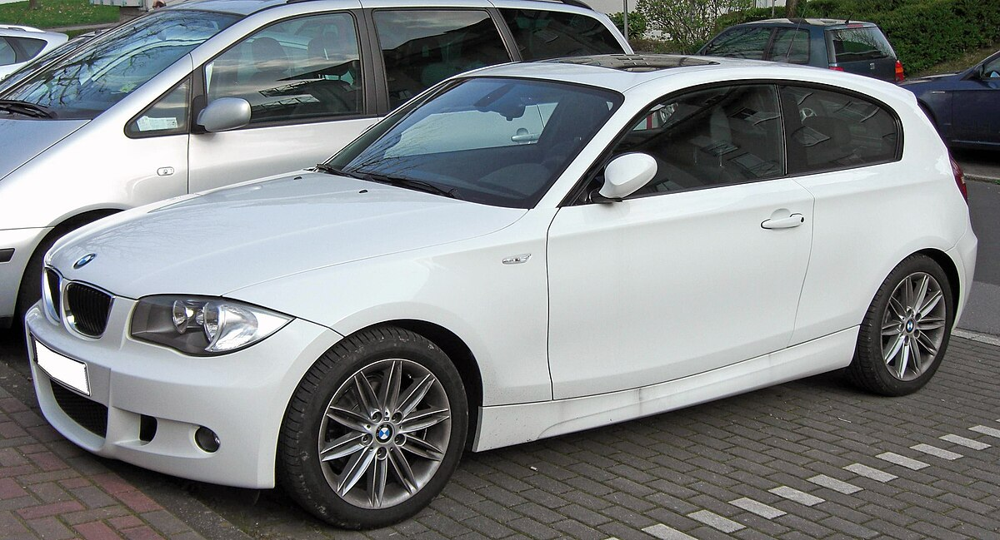
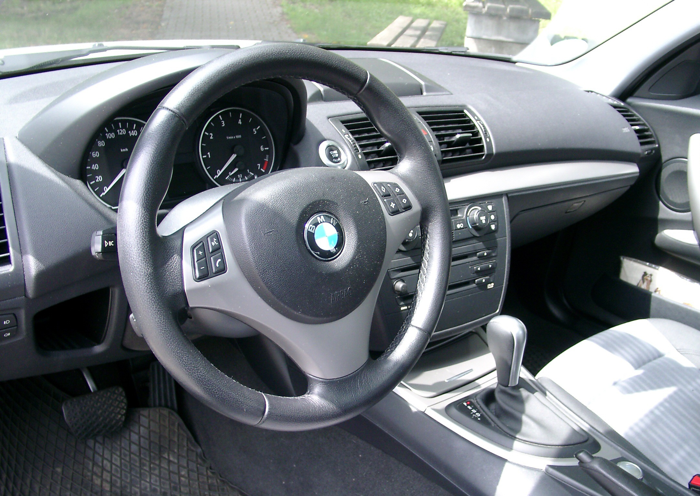
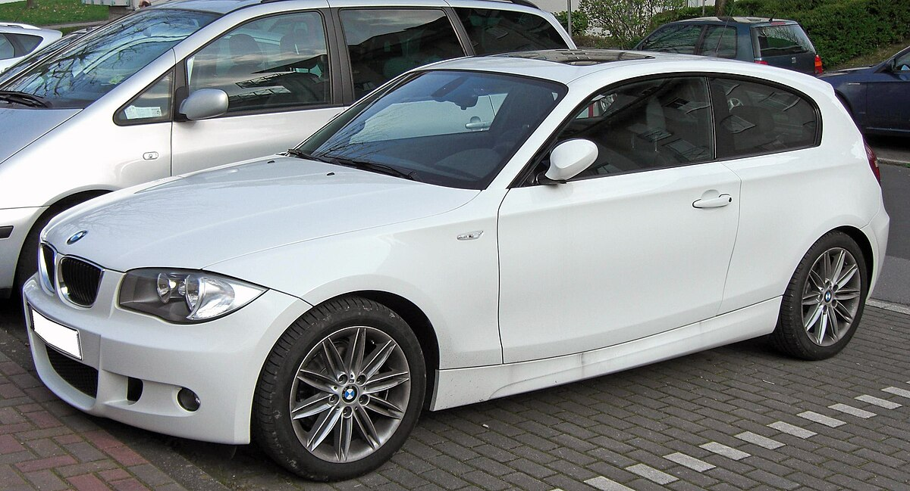
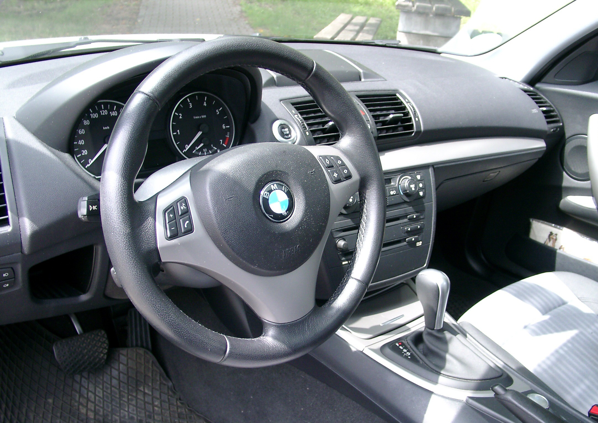
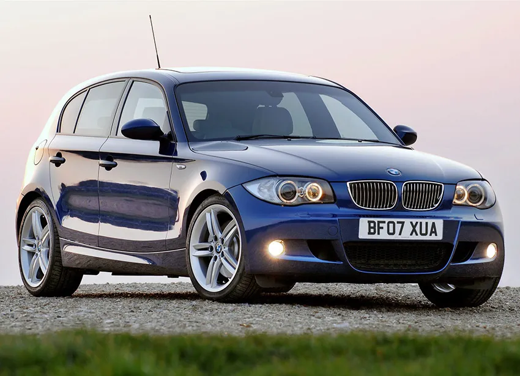
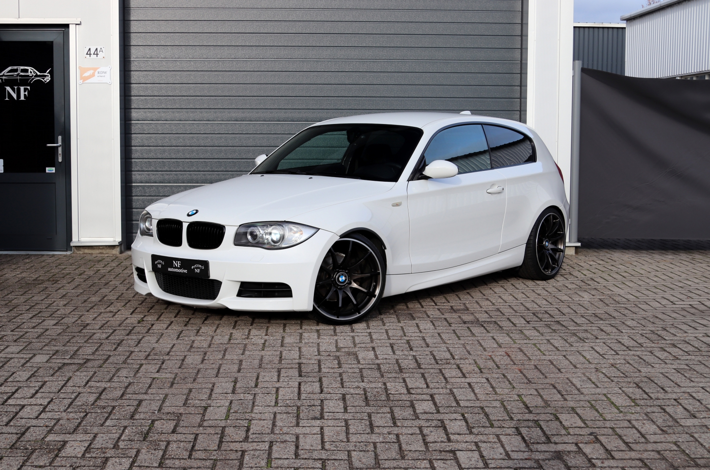
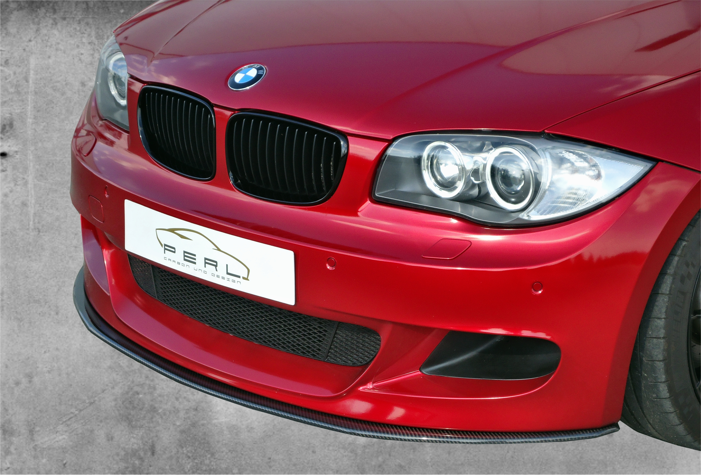
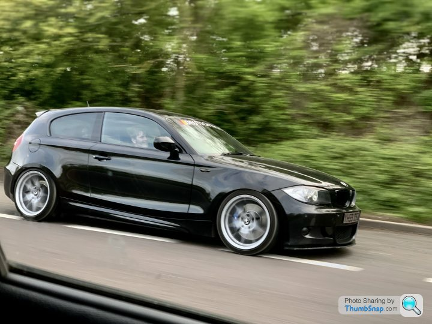
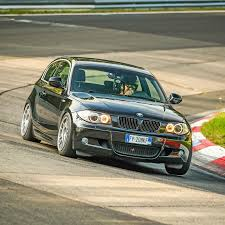

BMW E81
The compact and sporty 1 Series hatchback (2004 - 2013)
 



Car Specifications
- Engine Options: 1.6L Inline-4, 2.0L Inline-4, 2.0L Diesel, 3.0L Inline-6
- Power: 116 - 218 hp
- Torque: 160 - 320 Nm
- Transmission: 6-speed manual, 6-speed automatic
- Top Speed: 210 km/h (130 mph)
- 0-60 mph: 8.5 seconds
- Fuel Economy: 6.5 L/100 km (36 mpg)
- Production Years: 2004 - 2013
- Body Style: 3-door hatchback
- Drive Type: Rear-Wheel Drive
- Weight: 1,350 kg
About the BMW E81
The BMW E81 is part of the first generation of the 1 Series, designed to offer a sporty and compact alternative to the larger BMW models. The E81 quickly became popular for its excellent handling characteristics, rear-wheel-drive layout, and premium interior features. The hatchback configuration made it practical, while the sportier trims, especially the 120i and 123d, offered a thrilling driving experience.
During its production run from 2004 to 2013, the E81 was available in a range of engine configurations, from efficient 1.6L and 2.0L inline-four engines to more powerful diesel options. With its athletic performance and distinctive styling, the E81 became a favorite among urban drivers and BMW enthusiasts alike.
Image Gallery





Key Features
- Sporty Performance: Rear-wheel drive, sharp handling, and a range of potent engines make the E81 a fun car to drive.
- Premium Interior: A well-designed, high-quality cabin that feels more luxurious than its compact size suggests.
- Modern Technology: Features like iDrive (on higher trims), advanced infotainment options, and climate control.
- Safety: High safety ratings with standard features like stability control, airbags, and active headrests.
- Customizable: Various trims and packages allowed owners to tailor their E81 for performance or comfort.
Technical Information
The BMW E81 is available in several engine variations, each with different configurations and power outputs. Here's a breakdown of the engine codes and iterations:
Engine Codes and Iterations
- N45: 1.6L Inline-4, 116 hp, used in 114i, 116i
- N46: 1.6L Inline-4, 122 hp, used in 118i
- N52: 2.0L Inline-4, 143 hp, used in 120i
- M47: 2.0L Diesel Inline-4, 143 hp, used in 118d
- M57: 2.0L Diesel Inline-4, 177 hp, used in 120d
- N47: 2.0L Diesel Inline-4, 163 hp, used in 118d
Conclusion
The BMW E81 offers a blend of sporty driving dynamics and practicality in a compact and stylish hatchback. Whether you're looking for a fun daily driver or a city car with the performance pedigree of BMW, the E81 stands out as one of the best in its class.